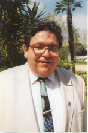

Please note: the AAS Obituaries are temporarily being hosted on this website while their full content is being ingested into the PubPub publishing platform newly adopted by the Bulletin of the American Astronomical Society. When the migration is complete, your existing links will take you to the final, migrated content. Contact peter.williams@aas.org with any questions.
Adrian D. Herzog (1947-2001)
Adrian D. Herzog died of an apparent heart attack on the evening of 28 February 2001. He is survived by his mother, Gertrud Herzog, and his wife, Dora. Adrian's father, Emil R. Herzog, a well-known astronomer, passed away in 1998 (BAAS, 30, 4:457). At the time of his death, Adrian was the chairman of the Department of Physics and Astronomy at California State University, Northridge (CSUN).
Adrian received his BA in 1971 at the University of California, Los Angeles and in 1972 an MS in Astronomy at San Diego State University, where he was the first MS student of Ron Angione. He carried out his PhD research at New Mexico State University where he received his PhD in 1977 under Walt Sanders. Adrian worked on a wide variety of projects while completing his PhD, publishing papers on subjects ranging from open cluster photometry (his first publication, in 1975), to observations of Mercury and Europa, to globular cluster measurements. Adrian's PhD thesis was an analysis of numerical integration techniques for open cluster modeling and their implications for the star loss rate from such clusters. His friend Rita Beebe recalls that Adrian's nickname during his graduate student days was "Assistant Department Head." While he was teased about this, she says, "It was sure nice to have a student who was fully involved in the department." While at NMSU, Adrian also worked at the VLA from 1976 to 1978, where he was one of the original members of the system integration group. After his arrival at CSUN, Adrian would often regale us with tales of "stupid observer tricks" from his time as a telescope operator.
In 1978 Adrian moved to the University of Wyoming where his interests shifted to infrared observations. He coauthored an article with Gary Grasdalen, John Hackwell, and Robert Gehrz on the then-new techniques of infrared imaging for Sky and Telescope in 1980. Adrian also published an article on infrared photometry of the peculiar object MWC 349 in which he identified the optical counterpart of the infrared source, now believed to be a main sequence star with a disk. Adrian took charge of the new Wyoming planetarium. His knowledge of how to run a planetarium would be of great value at Northridge.
In 1981, Adrian took a tenure track position at CSUN as an assistant professor. He soon began to involve himself in the research efforts at the San Fernando Observatory (SFO) on top of a heavy teaching schedule. He helped at the SFO by carrying out observations and writing thousands of lines of code for data reduction software to reduce photometric and magnetic field measurements. In the early 1990s, the need for a planetarium became clear. Adrian worked with Donald Bianchi, the dean of the College of Science and Mathematics, to push for funding for a planetarium as part of a new science addition. The new planetarium was dedicated in 1991, just a few years before the "Northridge" earthquake. Naturally, Adrian was its first director.
In 1996, Adrian was elected chairman of the Department, a position he greatly enjoyed and one that won him widespread respect at CSUN. According to the office staff, who observed him on a daily basis, he was a great manager and a team player. Adrian always kept his door open for students. No matter how busy he was he would accept the students with a smile, never talking down to anybody. He was a people person, approachable but firm with his decisions. He would always willingly contribute to affairs of the department, bringing students, staff and faculty together on different occasions such as the annual Christmas party and the annual department picnic.
Adrian's sense of humor helped him in his teaching and was immensely helpful when he was chairman. He will be greatly missed by his colleagues at CSUN.
Helpful comments were received from Rita Beebe and the secretaries in the CSUN Department of Physics and Astronomy.
Photo by Barbara Caretto
Obituary written by: Gary Chapman (California State University at Northridge), Stephen Walton (California State University at Northridge)
BAAS Citation: BAAS, 2001, 33, 1568
SAO/NASA ADS Bibcode: 2001BAAS...33.1568C